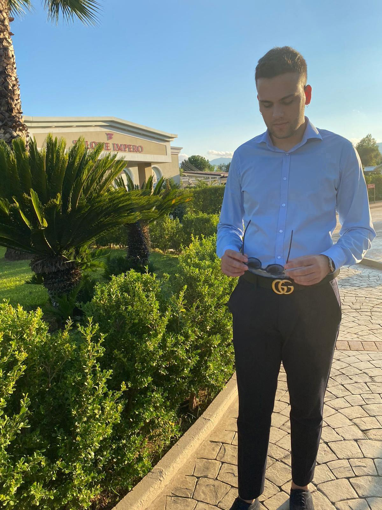
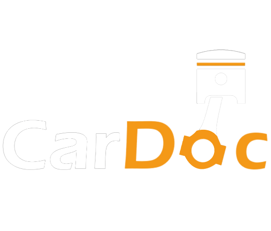
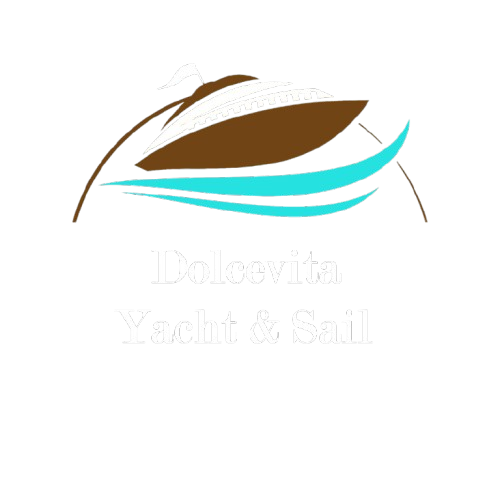
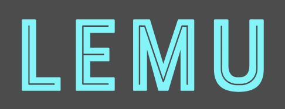
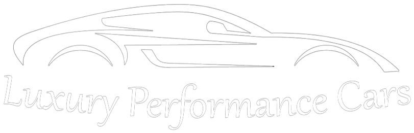

Benvenuto!
Questo è uno spazio personale dove presento il mio percorso, le mie competenze e i progetti che ho realizzato.
Mi presento, sono Pietro Cimino e sono un giovane laureato in Informatica presso l’Università della Calabria. Attualmente sto frequentando la laurea magistrale in Informatica per il Management presso l’Università di Bologna. Negli anni ho maturato esperienze in diverse aree dell'informatica: assistenza tecnica, sviluppo di software e siti web, gestione online di strutture ricettive e creazione di soluzioni digitali personalizzate. La mia passione è trasformare le idee in strumenti utili, sicuri e innovativi, per aiutare persone e aziende a crescere nel mondo digitale.

Chi Sono
Sono nato a Corigliano-Rossano, nella splendida Calabria, e fin da bambino sono stato profondamente affascinato dal mondo dei computer e delle tecnologie digitali. La mia passione è nata in un negozio di informatica, dove trascorrevo ore esplorando hardware e software con curiosità e meraviglia. Questo interesse si è consolidato nel corso degli anni e mi ha accompagnato durante tutta la scuola superiore, periodo in cui ho avuto l’opportunità di supportare la scuola nella manutenzione e nella risoluzione dei problemi dei sistemi informatici, trasformando una curiosità iniziale in una vera e propria competenza pratica.
Oggi sono un ragazzo semplice, motivato e curioso, con una grande voglia di sperimentare e imparare continuamente. Amo creare soluzioni digitali utili alle persone e mi piace lavorare in team, condividendo idee e collaborando per raggiungere obiettivi comuni.
Le Mie Competenze
Sviluppo Software
HTML, CSS, JavaScript, Angular, Python, Java, C++, C, SQL, NoSQL e altro.
Reti & Sicurezza
TCP/IP, configurazione reti, gestione firewall, sicurezza di rete e altro.
Assistenza IT
Riparazioni PC e device, supporto hardware/software, manutenzione e configurazioni.
Gestione Online Strutture Ricettive
Gestione portali OTA, ottimizzazione prenotazioni e attività amministrative.
Curriculum
Esperienza Lavorativa
Gestione Online Strutture Ricettive
Autonomo
Gestione delle piattaforme di prenotazione online (Booking, Airbnb, ecc.); ottimizzazione delle inserzioni e dei prezzi; coordinamento delle comunicazioni con gli ospiti; monitoraggio delle recensioni e miglioramento della reputazione digitale; sviluppo e manutenzione di siti web dedicati alle strutture ricettive.
Tecnico Informatico
Autonomo
Installazione, configurazione e manutenzione di sistemi hardware e software; individuazione e risoluzione di malfunzionamenti; assistenza tecnica agli utenti; gestione di reti locali, dispositivi periferici e sistemi operativi; aggiornamento e ottimizzazione delle postazioni di lavoro per garantire efficienza e sicurezza.
Tecnico Informatico
Soluzioni Informatiche di Oretti Raffaele S.A.S
Assistenza clienti nella scelta di prodotti tecnologici; riparazioni hardware e interventi tecnici su PC e periferiche; supporto nella gestione del magazzino e del punto vendita; gestione di operazioni di cassa e fatturazione semplice.
Formazione
Laurea Magistrale
Università di Bologna
Laurea Magistrale in Informatica con percorso Informatica per il Management
Laurea Triennale
Università della Calabria
Laurea Triennale in Informatica con percorso Enterprise Applications
Diploma
Liceo Scientifico F. Bruno
Diploma di Maturità Scientifica con formazione in ambito scientifico e tecnologico
I Miei Progetti

CarDoc
CarDoc è un progetto universitario realizzato sia in versione web per il corso di Web Applications con backend in Java e frontend in Angular e sia in versione Desktop per il corso di User Interfaces Design con backend in Java e interfaccia in FXML e CSS

Dolcevita Yacht & Sail
Dolcevita Yacht & Sail è un progetto universitario per il corso di Ingegneria del Software, focalizzato sull'applicazione dei pattern di programmazione. In particolare, sono stati utilizzati i design pattern Proxy e Prototype. Il progetto è stato sviluppato in Java, con un'interfaccia grafica implementata tramite CSS e FXML. È inclusa anche la stesura della documentazione.

Lemu
Lemu è un progetto universitario per il corso di Enterprise Applications, focalizzato sulla programmazione mobile, in particolare su Android. Il progetto è stato sviluppato in Java per il backend e in Kotlin per il frontend, integrando Spring Security e OAuth 2.0 per garantire un sistema di autenticazione sicuro e la protezione dei dati degli utenti.

Luxury Performance Cars
Luxury Performance Cars è un'applicazione web sviluppata durante il mio tirocinio presso l'Università della Calabria. L'obiettivo dell'applicazione è duplice: offrire all’utente un’esperienza di ricerca delle auto fluida e ottimizzata per ogni esigenza e fornire all’amministratore del sistema strumenti avanzati per analizzare i dati e ottenere una visione chiara delle azioni degli utenti, così da comprenderne le richieste e soddisfarle nel tempo. Tra le funzionalità principali vi sono una sofisticata analisi dei dati e un algoritmo di machine learning per predire il potenziale successo di vendita di un’auto, sulla base di parametri elaborati.
Leucosia Luxury Suites
Leucosia Luxury Suites è un progetto universitario sviluppato in versione web per il corso magistrale di Piattaforme Software per Applicazioni sul Web, con backend in Java e frontend in Angular. La sicurezza è stata gestita tramite Spring Security con autenticazione basata su JWT e gestione delle sessioni tramite cookie. Inoltre, è stato integrato un sistema di notifiche via email SMTP per mantenere l’utente costantemente aggiornato sulle azioni effettuate sul proprio account.
Gest-in
Gest-in è un’applicazione pensata per semplificare la gestione delle prenotazioni di una struttura ricettiva, raccogliendo in un’unica agenda tutte le prenotazioni ricevute dalle diverse piattaforme di booking, evitando così l'overbooking.
Con Gest-in puoi:
• Visualizzare in modo chiaro e unificato tutte le prenotazioni.
• Tenere sotto controllo i giorni di pulizia e le attività di housekeeping.
• Aggiungere manualmente prenotazioni e pulizie programmate.
• Gestire l’agenda in tempo reale, ottimizzando il lavoro dello staff.
Il tutto con un’interfaccia semplice, intuitiva e studiata per risparmiare tempo.
Contattami
Informazioni di Contatto
pietrocimino3@gmail.com
Telefono
+39 389 2347941
Località
Corigliano-Rossano, Cosenza, Calabria, Italia